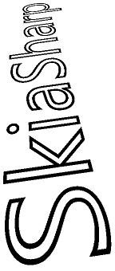

3D Rotations in SkiaSharp
Use non-affine transforms to rotate 2D objects in 3D space.
One common application of non-affine transforms is simulating the rotation of a 2D object in 3D space:

This job involves working with three-dimensional rotations, and then deriving a non-affine SKMatrix transform that performs these 3D rotations.
It is hard to develop this SKMatrix transform working solely within two dimensions. The job becomes much easier when this 3-by-3 matrix is derived from a 4-by-4 matrix used in 3D graphics. SkiaSharp includes the SKMatrix44 class for this purpose, but some background in 3D graphics is necessary for understanding 3D rotations and the 4-by-4 transform matrix.
A three-dimensional coordinate system adds a third axis called Z. Conceptually, the Z axis is at right angles to the screen. Coordinate points in 3D space are indicated with three numbers: (x, y, z). In the 3D coordinate system used in this article, increasing values of X are to the right and increasing values of Y go down, just as in two dimensions. Increasing positive Z values come out of the screen. The origin is the upper-left corner, just as in 2D graphics. You can think of the screen as an XY plane with the Z axis at right angles to this plane.
This is called a left-hand coordinate system. If you point the forefinger for your left hand in the direction of positive X coordinates (to the right), and your middle finger in the direction of increasing Y coordinates (down), then your thumb points in the direction of increasing Z coordinates — extending out from the screen.
In 3D graphics, transforms are based on a 4-by-4 matrix. Here is the 4-by-4 identity matrix:
| 1 0 0 0 | | 0 1 0 0 | | 0 0 1 0 | | 0 0 0 1 |
In working with a 4-by-4 matrix, it is convenient to identify the cells with their row and column numbers:
| M11 M12 M13 M14 | | M21 M22 M23 M24 | | M31 M32 M33 M34 | | M41 M42 M43 M44 |
However, the SkiaSharp Matrix44 class is a little different. The only way to set or get individual cell values in SKMatrix44 is by using the Item indexer. The row and column indices are zero-based rather than one-based, and the rows and columns are swapped. The cell M14 in the above diagram is accessed using the indexer [3, 0] in a SKMatrix44 object.
In a 3D graphics system, a 3D point (x, y, z) is converted to a 1-by-4 matrix for multiplying by the 4-by-4 transform matrix:
| M11 M12 M13 M14 |
| x y z 1 | × | M21 M22 M23 M24 | = | x' y' z' w' |
| M31 M32 M33 M34 |
| M41 M42 M43 M44 |
Analogous to 2D transforms that take place in three dimensions, 3D transforms are assumed to take place in four dimensions. The fourth dimension is referred to as W, and the 3D space is assumed to exist within the 4D space where W coordinates are equal to 1. The transform formulas are as follows:
x' = M11·x + M21·y + M31·z + M41
y' = M12·x + M22·y + M32·z + M42
z' = M13·x + M23·y + M33·z + M43
w' = M14·x + M24·y + M34·z + M44
It's obvious from the transform formulas that the cells M11, M22, M33 are scaling factors in the X, Y, and Z directions, and M41, M42, and M43 are translation factors in the X, Y, and Z directions.
To convert these coordinates back to the 3D space where W equals 1, the x', y', and z' coordinates are all divided by w':
x" = x' / w'
y" = y' / w'
z" = z' / w'
w" = w' / w' = 1
That division by w' provides perspective in 3D space. If w' equals 1, then no perspective occurs.
Rotations in 3D space can be quite complex, but the simplest rotations are those around the X, Y, and Z axes. A rotation of angle α around the X axis is this matrix:
| 1 0 0 0 | | 0 cos(α) sin(α) 0 | | 0 –sin(α) cos(α) 0 | | 0 0 0 1 |
Values of X remain the same when subjected to this transform. Rotation around the Y axis leaves values of Y unchanged:
| cos(α) 0 –sin(α) 0 | | 0 1 0 0 | | sin(α) 0 cos(α) 0 | | 0 0 0 1 |
Rotation around the Z axis is the same as in 2D graphics:
| cos(α) sin(α) 0 0 | | –sin(α) cos(α) 0 0 | | 0 0 1 0 | | 0 0 0 1 |
The direction of rotation is implied by the handedness of the coordinate system. This is a left-handed system, so if you point the thumb of your left hand towards increasing values for a particular axis — to the right for rotation around the X axis, down for rotation around the Y axis, and towards you for rotation around the Z axis — then the curve of your other fingers indicates the direction of rotation for positive angles.
SKMatrix44 has generalized static CreateRotation and CreateRotationDegrees methods that allow you to specify the axis around which the rotation occurs:
public static SKMatrix44 CreateRotationDegrees (Single x, Single y, Single z, Single degrees)
For rotation around the X axis, set the first three arguments to 1, 0, 0. For rotation around the Y axis, set them to 0, 1, 0, and for rotation around the Z axis, set them to 0, 0, 1.
The fourth column of the 4-by-4 is for perspective. The SKMatrix44 has no methods for creating perspective transforms, but you can create one yourself using the following code:
SKMatrix44 perspectiveMatrix = SKMatrix44.Identity;
perspectiveMatrix[2, 3] = -1 / depth;
The reason for the argument name depth will be evident shortly. That code creates the matrix:
| 1 0 0 0 | | 0 1 0 0 | | 0 0 1 -1/depth | | 0 0 0 1 |
The transform formulas result in the following calculation of w':
w' = –z / depth + 1
This serves to reduce X and Y coordinates when values of Z are less than zero (conceptually behind the XY plane) and to increase X and Y coordinates for positive values of Z. When the Z coordinate equals depth, then w' is zero, and coordinates become infinite. Three-dimensional graphics systems are built around a camera metaphor, and the depth value here represents the distance of the camera from the origin of the coordinate system. If a graphical object has a Z coordinate that is depth units from the origin, it is conceptually touching the lens of the camera and becomes infinitely large.
Keep in mind that you'll probably be using this perspectiveMatrix value in combination with rotation matrices. If a graphics object being rotated has X or Y coordinates greater than depth, then the rotation of this object in 3D space is likely to involve Z coordinates greater than depth. This must be avoided! When creating perspectiveMatrix you want to set depth to a value sufficiently large for all coordinates in the graphics object no matter how it is rotated. This ensures that there is never any division by zero.
Combining 3D rotations and perspective requires multiplying 4-by-4 matrices together. For this purpose, SKMatrix44 defines concatenation methods. If A and B are SKMatrix44 objects, then the following code sets A equal to A × B:
A.PostConcat(B);
When a 4-by-4 transform matrix is used in a 2D graphics system, it is applied to 2D objects. These objects are flat and are assumed to have Z coordinates of zero. The transform multiplication is a little simpler than the transform shown earlier:
| M11 M12 M13 M14 |
| x y 0 1 | × | M21 M22 M23 M24 | = | x' y' z' w' |
| M31 M32 M33 M34 |
| M41 M42 M43 M44 |
That 0 value for z results in transform formulas that do not involve any cells in the third row of the matrix:
x' = M11·x + M21·y + M41
y' = M12·x + M22·y + M42
z' = M13·x + M23·y + M43
w' = M14·x + M24·y + M44
Moreover, the z' coordinate is irrelevant here as well. When a 3D object is displayed in a 2D graphics system, it is collapsed to a two-dimensional object by ignoring the Z coordinate values. The transform formulas are really just these two:
x" = x' / w'
y" = y' / w'
This means that the third row and third column of the 4-by-4 matrix can be ignored.
But if that is so, why is the 4-by-4 matrix even necessary in the first place?
Although the third row and third column of the 4-by-4 are irrelevant for two-dimensional transforms, the third row and column do play a role prior to that when various SKMatrix44 values are multiplied together. For example, suppose that you multiply rotation around the Y axis with the perspective transform:
| cos(α) 0 –sin(α) 0 | | 1 0 0 0 | | cos(α) 0 –sin(α) sin(α)/depth | | 0 1 0 0 | × | 0 1 0 0 | = | 0 1 0 0 | | sin(α) 0 cos(α) 0 | | 0 0 1 -1/depth | | sin(α) 0 cos(α) -cos(α)/depth | | 0 0 0 1 | | 0 0 0 1 | | 0 0 0 1 |
In the product, the cell M14 now contains a perspective value. If you want to apply that matrix to 2D objects, the third row and column are eliminated to convert it into a 3-by-3 matrix:
| cos(α) 0 sin(α)/depth | | 0 1 0 | | 0 0 1 |
Now it can be used to transform a 2D point:
| cos(α) 0 sin(α)/depth |
| x y 1 | × | 0 1 0 | = | x' y' z' |
| 0 0 1 |
The transform formulas are:
x' = cos(α)·x
y' = y
z' = (sin(α)/depth)·x + 1
Now divide everything by z':
x" = cos(α)·x / ((sin(α)/depth)·x + 1)
y" = y / ((sin(α)/depth)·x + 1)
When 2D objects are rotated with a positive angle around the Y axis, then positive X values recede to the background while negative X values come to the foreground. The X values seem to move closer to the Y axis (which is governed by the cosine value) as coordinates furthest from the Y axis becomes smaller or larger as they move further from the viewer or closer to the viewer.
When using SKMatrix44, perform all the 3D rotation and perspective operations by multiplying various SKMatrix44 values. Then you can extract a two-dimensional 3-by-3 matrix from the 4-by-4 matrix using the Matrix property of the SKMatrix44 class. This property returns a familiar SKMatrix value.
The Rotation 3D page lets you experiment with 3D rotation. The Rotation3DPage.xaml file instantiates four sliders to set rotation around the X, Y, and Z axes, and to set a depth value:
<ContentPage xmlns="http://schemas.microsoft.com/dotnet/2021/maui"
xmlns:x="http://schemas.microsoft.com/winfx/2009/xaml"
xmlns:skia="clr-namespace:SkiaSharp.Views.Maui.Controls;assembly=SkiaSharp.Views.Maui.Controls"
x:Class="SkiaSharpFormsDemos.Transforms.Rotation3DPage"
Title="Rotation 3D">
<Grid>
<Grid.RowDefinitions>
<RowDefinition Height="Auto" />
<RowDefinition Height="Auto" />
<RowDefinition Height="Auto" />
<RowDefinition Height="Auto" />
<RowDefinition Height="Auto" />
<RowDefinition Height="Auto" />
<RowDefinition Height="Auto" />
<RowDefinition Height="Auto" />
<RowDefinition Height="*" />
</Grid.RowDefinitions>
<Grid.Resources>
<ResourceDictionary>
<Style TargetType="Label">
<Setter Property="HorizontalTextAlignment" Value="Center" />
</Style>
<Style TargetType="Slider">
<Setter Property="Margin" Value="20, 0" />
<Setter Property="Maximum" Value="360" />
</Style>
</ResourceDictionary>
</Grid.Resources>
<Slider x:Name="xRotateSlider"
Grid.Row="0"
ValueChanged="OnSliderValueChanged" />
<Label Text="{Binding Source={x:Reference xRotateSlider},
Path=Value,
StringFormat='X-Axis Rotation = {0:F0}'}"
Grid.Row="1" />
<Slider x:Name="yRotateSlider"
Grid.Row="2"
ValueChanged="OnSliderValueChanged" />
<Label Text="{Binding Source={x:Reference yRotateSlider},
Path=Value,
StringFormat='Y-Axis Rotation = {0:F0}'}"
Grid.Row="3" />
<Slider x:Name="zRotateSlider"
Grid.Row="4"
ValueChanged="OnSliderValueChanged" />
<Label Text="{Binding Source={x:Reference zRotateSlider},
Path=Value,
StringFormat='Z-Axis Rotation = {0:F0}'}"
Grid.Row="5" />
<Slider x:Name="depthSlider"
Grid.Row="6"
Maximum="2500"
Minimum="250"
ValueChanged="OnSliderValueChanged" />
<Label Grid.Row="7"
Text="{Binding Source={x:Reference depthSlider},
Path=Value,
StringFormat='Depth = {0:F0}'}" />
<skia:SKCanvasView x:Name="canvasView"
Grid.Row="8"
PaintSurface="OnCanvasViewPaintSurface" />
</Grid>
</ContentPage>
Notice that the depthSlider is initialized with a Minimum value of 250. This implies that the 2D object being rotated here has X and Y coordinates restricted to a circle defined by a 250-pixel radius around the origin. Any rotation of this object in 3D space will always result in coordinate values less than 250.
The Rotation3DPage.cs code-behind file loads in a bitmap that is 300 pixels square from the Resources/Raw folder:
public partial class Rotation3DPage : ContentPage
{
SKBitmap? bitmap;
public Rotation3DPage()
{
InitializeComponent();
_ = LoadBitmapAsync();
}
async Task LoadBitmapAsync()
{
using Stream stream = await FileSystem.OpenAppPackageFileAsync("SeatedMonkey.jpg");
bitmap = SKBitmap.Decode(stream);
canvasView.InvalidateSurface();
}
void OnSliderValueChanged(object? sender, ValueChangedEventArgs args)
{
if (canvasView != null)
{
canvasView.InvalidateSurface();
}
}
...
}
If the 3D transform is centered on this bitmap, then X and Y coordinates range between –150 and 150, while the corners are 212 pixels from the center, so everything is within the 250-pixel radius.
The PaintSurface handler creates SKMatrix44 objects based on the sliders and multiplies them together using PostConcat. The SKMatrix value extracted from the final SKMatrix44 object is surrounded by translate transforms to center the rotation in the center of the screen:
public partial class Rotation3DPage : ContentPage
{
SKBitmap? bitmap;
public Rotation3DPage()
{
InitializeComponent();
_ = LoadBitmapAsync();
}
async Task LoadBitmapAsync()
{
using Stream stream = await FileSystem.OpenAppPackageFileAsync("SeatedMonkey.jpg");
bitmap = SKBitmap.Decode(stream);
canvasView.InvalidateSurface();
}
void OnSliderValueChanged(object? sender, ValueChangedEventArgs args)
{
if (canvasView != null)
{
canvasView.InvalidateSurface();
}
}
void OnCanvasViewPaintSurface(object? sender, SKPaintSurfaceEventArgs args)
{
SKImageInfo info = args.Info;
SKSurface surface = args.Surface;
SKCanvas canvas = surface.Canvas;
canvas.Clear();
if (bitmap is null)
return;
// Find center of canvas
float xCenter = info.Width / 2;
float yCenter = info.Height / 2;
// Translate center to origin
SKMatrix matrix = SKMatrix.CreateTranslation(-xCenter, -yCenter);
// Use 3D matrix for 3D rotations and perspective
// Note: PostConcat returns a new matrix, use *= operator
SKMatrix44 matrix44 = SKMatrix44.Identity;
matrix44 *= SKMatrix44.CreateRotationDegrees(1, 0, 0, (float)xRotateSlider.Value);
matrix44 *= SKMatrix44.CreateRotationDegrees(0, 1, 0, (float)yRotateSlider.Value);
matrix44 *= SKMatrix44.CreateRotationDegrees(0, 0, 1, (float)zRotateSlider.Value);
SKMatrix44 perspectiveMatrix = SKMatrix44.Identity;
perspectiveMatrix[2, 3] = -1 / (float)depthSlider.Value;
matrix44 *= perspectiveMatrix;
// Concatenate with 2D matrix
matrix = matrix.PostConcat(matrix44.Matrix);
// Translate back to center
matrix = matrix.PostConcat(SKMatrix.CreateTranslation(xCenter, yCenter));
// Set the matrix and display the bitmap
canvas.SetMatrix(matrix);
float xBitmap = xCenter - bitmap.Width / 2;
float yBitmap = yCenter - bitmap.Height / 2;
canvas.DrawBitmap(bitmap, xBitmap, yBitmap);
}
}
When you experiment with the fourth slider, you'll notice that the different depth settings don't move the object further away from the viewer, but instead alter the extent of the perspective effect:

The Animated Rotation 3D also uses SKMatrix44 to animate a text string in 3D space. The textPaint object set as a field is used in the constructor to determine the bounds of the text:
public class AnimatedRotation3DPage : ContentPage
{
SKCanvasView canvasView;
float xRotationDegrees, yRotationDegrees, zRotationDegrees;
string text = "SkiaSharp";
SKPaint textPaint = new SKPaint
{
Style = SKPaintStyle.Stroke,
Color = SKColors.Black,
StrokeWidth = 3,
};
SKFont font = new SKFont
{
Size = 100
};
SKRect textBounds;
public AnimatedRotation3DPage()
{
Title = "Animated Rotation 3D";
canvasView = new SKCanvasView();
canvasView.PaintSurface += OnCanvasViewPaintSurface;
Content = canvasView;
// Measure the text
font.MeasureText(text, out textBounds);
}
...
}
The OnAppearing override defines three .NET MAUI Animation objects to animate the xRotationDegrees, yRotationDegrees, and zRotationDegrees fields at different rates. Notice that the periods of these animations are set to prime numbers (5 seconds, 7 seconds, and 11 seconds) so the overall combination only repeats every 385 seconds, or more than 10 minutes:
public class AnimatedRotation3DPage : ContentPage
{
...
protected override void OnAppearing()
{
base.OnAppearing();
new Animation((value) => xRotationDegrees = 360 * (float)value).
Commit(this, "xRotationAnimation", length: 5000, repeat: () => true);
new Animation((value) => yRotationDegrees = 360 * (float)value).
Commit(this, "yRotationAnimation", length: 7000, repeat: () => true);
new Animation((value) =>
{
zRotationDegrees = 360 * (float)value;
canvasView.InvalidateSurface();
}).Commit(this, "zRotationAnimation", length: 11000, repeat: () => true);
}
protected override void OnDisappearing()
{
base.OnDisappearing();
this.AbortAnimation("xRotationAnimation");
this.AbortAnimation("yRotationAnimation");
this.AbortAnimation("zRotationAnimation");
}
...
}
As in the previous program, the PaintCanvas handler creates SKMatrix44 values for rotation and perspective, and multiplies them together:
public class AnimatedRotation3DPage : ContentPage
{
...
void OnCanvasViewPaintSurface(object? sender, SKPaintSurfaceEventArgs args)
{
SKImageInfo info = args.Info;
SKSurface surface = args.Surface;
SKCanvas canvas = surface.Canvas;
canvas.Clear();
// Find center of canvas
float xCenter = info.Width / 2;
float yCenter = info.Height / 2;
// Translate center to origin
SKMatrix matrix = SKMatrix.CreateTranslation(-xCenter, -yCenter);
// Scale so text fits
float scale = Math.Min(info.Width / textBounds.Width,
info.Height / textBounds.Height);
matrix = matrix.PostConcat(SKMatrix.CreateScale(scale, scale));
// Calculate composite 3D transforms
float depth = 0.75f * scale * textBounds.Width;
SKMatrix44 matrix44 = SKMatrix44.Identity;
matrix44 *= SKMatrix44.CreateRotationDegrees(1, 0, 0, xRotationDegrees);
matrix44 *= SKMatrix44.CreateRotationDegrees(0, 1, 0, yRotationDegrees);
matrix44 *= SKMatrix44.CreateRotationDegrees(0, 0, 1, zRotationDegrees);
SKMatrix44 perspectiveMatrix = SKMatrix44.Identity;
perspectiveMatrix[2, 3] = -1 / depth;
matrix44 *= perspectiveMatrix;
// Concatenate with 2D matrix
matrix = matrix.PostConcat(matrix44.Matrix);
// Translate back to center
matrix = matrix.PostConcat(SKMatrix.CreateTranslation(xCenter, yCenter));
// Set the matrix and display the text
canvas.SetMatrix(matrix);
float xText = xCenter - textBounds.MidX;
float yText = yCenter - textBounds.MidY;
canvas.DrawText(text, xText, yText, SKTextAlign.Left, font, textPaint);
}
}
This 3D rotation is surrounded with several 2D transforms to move the center of rotation to the center of the screen, and to scale the size of the text string so that it is the same width as the screen:
{kind=link}